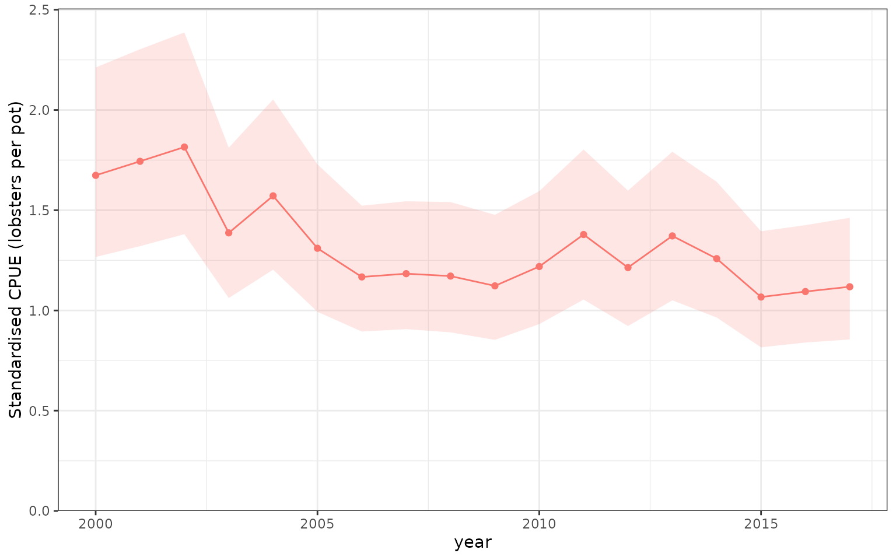
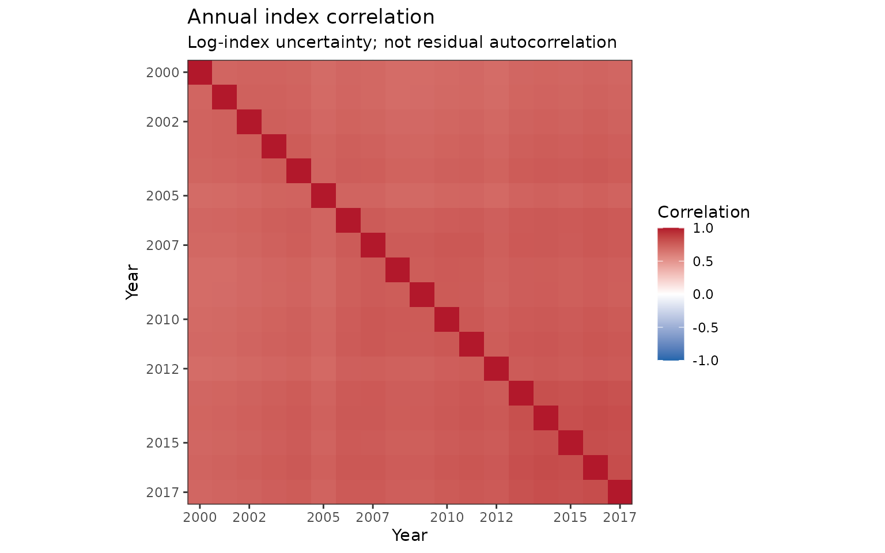
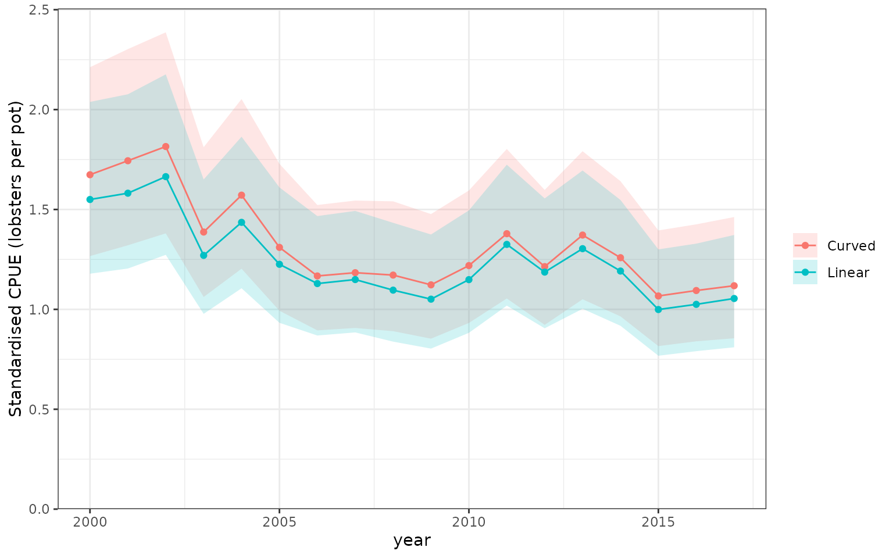
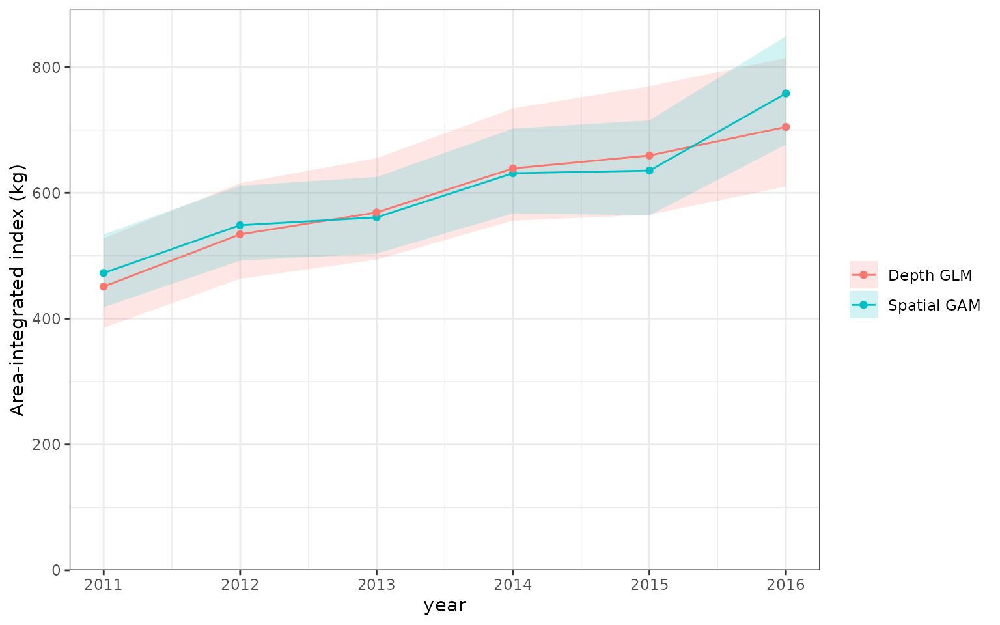

An assessment-ready table
cpue_index() calculates the expected response for a
fixed reference population in every year. It produces the familiar
assessment columns: Year, Mean,
Median, SD, CV,
Qlower, and Qupper, alongside method,
distribution, and link metadata. The result is an
influ_index object; index_table() gives a
reporting table, omitting an unavailable median by default.
as.data.frame() retains the full, stable schema for
existing code.
This is a different quantity from the centred year-effect contrasts in the influence and step plots. Both are useful, but neither is automatically an area-integrated abundance or biomass index.
Both cpue_index() and the separate
integrate_index() work with GLM, GAM, glmmTMB, complete
brms, sdmTMB, and univariate tinyVAST fits. Spatial effects are not
required for either calculation. The difference is the question:
standardisation produces a weighted mean, whereas
integration produces an area-weighted total over a
stated domain.
We use the same simulated lobster catches as the main article. The model below includes a monthly random intercept and a negative-binomial observation distribution. No simulation of new catches is needed for its index.
data(lobsters_per_pot)
lobster_model <- glmmTMB::glmmTMB(
lobsters ~ year + poly(depth, 3) + poly(soak, 3) + (1 | month),
family = glmmTMB::nbinom2(), data = lobsters_per_pot
)We explicitly choose median observed depth and a 24-hour soak. The
year column is omitted: cpue_index() repeats this same
profile in every observed year. The monthly random effect is set to
zero. That represents a zero-effect month on the link scale,
not the average response across the population of
months. These choices belong to the scientific definition of the
index.
reference <- data.frame(depth = median(lobsters_per_pot$depth), soak = 24)
lobster_index <- cpue_index(
lobster_model, year = "year", method = "standardised",
reference_data = reference, units = "lobsters per pot"
)
knitr::kable(index_table(lobster_index), digits = 3)| Year | Mean | SD | CV | Qlower | Qupper | Method | Distribution | Link |
|---|---|---|---|---|---|---|---|---|
| 2000 | 1.674 | 0.238 | 0.142 | 1.267 | 2.212 | standardised | nbinom2 | log |
| 2001 | 1.744 | 0.247 | 0.142 | 1.321 | 2.303 | standardised | nbinom2 | log |
| 2002 | 1.815 | 0.254 | 0.140 | 1.380 | 2.387 | standardised | nbinom2 | log |
| 2003 | 1.387 | 0.189 | 0.136 | 1.062 | 1.812 | standardised | nbinom2 | log |
| 2004 | 1.572 | 0.214 | 0.136 | 1.204 | 2.053 | standardised | nbinom2 | log |
| 2005 | 1.310 | 0.185 | 0.141 | 0.993 | 1.729 | standardised | nbinom2 | log |
| 2006 | 1.167 | 0.158 | 0.136 | 0.895 | 1.522 | standardised | nbinom2 | log |
| 2007 | 1.184 | 0.161 | 0.136 | 0.907 | 1.545 | standardised | nbinom2 | log |
| 2008 | 1.172 | 0.164 | 0.140 | 0.891 | 1.541 | standardised | nbinom2 | log |
| 2009 | 1.123 | 0.157 | 0.140 | 0.853 | 1.477 | standardised | nbinom2 | log |
| 2010 | 1.219 | 0.167 | 0.137 | 0.932 | 1.595 | standardised | nbinom2 | log |
| 2011 | 1.379 | 0.189 | 0.137 | 1.055 | 1.803 | standardised | nbinom2 | log |
| 2012 | 1.214 | 0.170 | 0.140 | 0.922 | 1.598 | standardised | nbinom2 | log |
| 2013 | 1.372 | 0.187 | 0.136 | 1.051 | 1.792 | standardised | nbinom2 | log |
| 2014 | 1.259 | 0.171 | 0.136 | 0.965 | 1.642 | standardised | nbinom2 | log |
| 2015 | 1.067 | 0.146 | 0.137 | 0.816 | 1.395 | standardised | nbinom2 | log |
| 2016 | 1.094 | 0.148 | 0.135 | 0.840 | 1.426 | standardised | nbinom2 | log |
| 2017 | 1.118 | 0.153 | 0.137 | 0.855 | 1.462 | standardised | nbinom2 | log |
method = "standardized" works identically. There is no
need to refit a model when printing, exporting, or plotting this
result.
plot_index(lobster_index)
Standardised expected lobsters per pot at the stated depth and soak-time reference profile, with the monthly random effect set to zero. The ribbon is a pointwise 95% delta-method confidence interval for the index, not the spread of individual catches.
What do the uncertainty columns mean?
For GLMs, GAMs, and glmmTMB, Mean is the fitted
expected-response estimate; SD is its propagated standard
error. CV is SD / Mean when the estimate is
positive. Median is deliberately missing: an MLE is not a
posterior median. Positive estimates use log-scale delta-method
intervals.
For a complete brms fit, Mean, Median,
SD, and the interval columns summarise posterior draws of
the expected-response index. They do not describe the
mean and median of individual catches. The native posterior_epred()
calculation combines the distributional parameters, including zero and
positive components where appropriate, within each draw.
# Use an existing complete fit, not the compact influence-vignette fixture.
bayesian_index <- cpue_index(
complete_brms_fit, year = "year", reference_data = reference,
ndraws = 1000, batch_size = 250, draw_batch_size = 100,
retain = "summary"
)
as.data.frame(bayesian_index)Prediction batches preserve the same draw identities across years and
reference rows. Only the annual summaries and their two small covariance
matrices are retained by default. Setting retain = "draws"
retains a draw-by-year matrix, not the much larger reference-row-by-draw
prediction matrix. The fitted model and reference data are not embedded
in the output object. Native prediction routines can still allocate
their own working memory.
uncertainty = "none" omits uncertainty summaries. For
frequentist models this also avoids covariance propagation. For brms it
still averages existing posterior expected-response draws, so it is not
a shortcut that substitutes posterior-mean coefficients and changes the
quantity being estimated.
Lognormal assessment parameters
Some assessments accept an index median and a log-scale SD, whereas
others accept an arithmetic mean and CV.
index_table(index, format = "lognormal") provides an
explicit marginal lognormal approximation from the index’s
Mean and SD:
The additional columns are Meanlog = m,
SDlog = s, and LognormalMedian = exp(m).
Substituting them into the usual lognormal moment formulae recovers the
input mean and variance. They describe uncertainty in the annual
index, not the distribution or residual dispersion of the
fitted response. A negative-binomial CPUE model can therefore supply a
lognormal assessment approximation without becoming a lognormal response
model.
assessment_marginals <- index_table(lobster_index, format = "lognormal")
knitr::kable(assessment_marginals[c("Year", "Mean", "SD", "CV",
"Meanlog", "SDlog", "LognormalMedian")], digits = 3)| Year | Mean | SD | CV | Meanlog | SDlog | LognormalMedian |
|---|---|---|---|---|---|---|
| 2000 | 1.674 | 0.238 | 0.142 | 0.505 | 0.142 | 1.657 |
| 2001 | 1.744 | 0.247 | 0.142 | 0.546 | 0.141 | 1.727 |
| 2002 | 1.815 | 0.254 | 0.140 | 0.586 | 0.139 | 1.798 |
| 2003 | 1.387 | 0.189 | 0.136 | 0.318 | 0.136 | 1.374 |
| 2004 | 1.572 | 0.214 | 0.136 | 0.443 | 0.136 | 1.557 |
| 2005 | 1.310 | 0.185 | 0.141 | 0.260 | 0.141 | 1.297 |
| 2006 | 1.167 | 0.158 | 0.136 | 0.146 | 0.135 | 1.157 |
| 2007 | 1.184 | 0.161 | 0.136 | 0.159 | 0.135 | 1.173 |
| 2008 | 1.172 | 0.164 | 0.140 | 0.149 | 0.139 | 1.160 |
| 2009 | 1.123 | 0.157 | 0.140 | 0.106 | 0.139 | 1.112 |
| 2010 | 1.219 | 0.167 | 0.137 | 0.189 | 0.136 | 1.208 |
| 2011 | 1.379 | 0.189 | 0.137 | 0.312 | 0.136 | 1.366 |
| 2012 | 1.214 | 0.170 | 0.140 | 0.184 | 0.139 | 1.202 |
| 2013 | 1.372 | 0.187 | 0.136 | 0.307 | 0.136 | 1.359 |
| 2014 | 1.259 | 0.171 | 0.136 | 0.221 | 0.135 | 1.247 |
| 2015 | 1.067 | 0.146 | 0.137 | 0.056 | 0.136 | 1.057 |
| 2016 | 1.094 | 0.148 | 0.135 | 0.081 | 0.134 | 1.084 |
| 2017 | 1.118 | 0.153 | 0.137 | 0.103 | 0.136 | 1.108 |
stopifnot(isTRUE(all.equal(
exp(assessment_marginals$Meanlog + assessment_marginals$SDlog^2 / 2),
assessment_marginals$Mean
)))An actual posterior Median, where available, is
preserved separately; it is not overwritten by
LognormalMedian. Frequentist reporting omits the missing
Median by default, while
include_median = "always" retains that column. This
resolves the empty-column presentation without inventing posterior
summaries. Non-positive means, invalid SDs, preview results, and
year-effect contrasts cannot produce this lognormal table.
The moment-matched Meanlog is not
log(Mean). Similarly, SDlog is not generally
the log-index SE from the joint calculation below. Choose the assessment
likelihood’s convention explicitly: do not silently substitute one
centre or uncertainty measure for the other.
Joint annual uncertainty
index_vcov(index) (or vcov(index)) returns
covariance among log annual indices;
scale = "response" gives covariance in the reported units.
The calculation uses the same reference population, random-effect
target, and normalisation as the table. It never refits the model or
simulates new observations. The diagonal of the response matrix matches
SD^2.
| Backend | Joint covariance calculation |
|---|---|
| GLM, GAM, glmmTMB | Delta method through the weighted annual response means; log-index gradients for log covariance. |
| brms | Sample covariance of annual posterior expected-response draws; take logs of those same draws for log covariance. |
| sdmTMB, tinyVAST | Sample covariance of joint Gaussian parameter/field simulations of the annual index; these are not MCMC draws. |
Shared parameters and fields can correlate estimates in different
years. This is not a residual autocorrelation estimate. A matrix cannot
be recovered from marginal SDs alone; old saved summaries without
covariance must be recalculated from their fitted models.
uncertainty = "none" deliberately does not provide a
matrix. Log covariance requires positive estimates and, for simulation
methods, positive draws; values are not clipped to pass this check. A
response-scale matrix can still exist when log covariance cannot.
Sigma <- index_vcov(lobster_index, require_pd = TRUE)
stopifnot(identical(rownames(Sigma), as.character(lobster_index$table$Year)))
stopifnot(isTRUE(all.equal(
unname(diag(index_vcov(lobster_index, scale = "response"))),
lobster_index$table$SD^2
)))
# Select and order both dimensions together, then match the table to them.
selected_years <- tail(lobster_index$table$Year, 5)
selected_Sigma <- index_vcov(lobster_index, years = selected_years)
selected_table <- index_table(lobster_index)[
match(rownames(selected_Sigma), lobster_index$table$Year), ]
stopifnot(identical(selected_table$Year, rownames(selected_Sigma)))
plot(lobster_index, type = "correlation")
Correlation among the unscaled annual log CPUE indices. The off-diagonal cells preserve dependence from the shared fitted model; these are not correlations among observed responses or residuals. The full covariance, rather than this unitless display, is the assessment input.
For a covariance display, use
plot(lobster_index, type = "covariance"). The main
article shows both and an example assessment-input bundle. Keeping
estimated dependence is preferable to discarding it when the joint
uncertainty model is appropriate, but it is not a guarantee of
improved stock-status estimates. Hoyle et al. (2024) discuss covariance propagation in
index construction (Section 5.8) and the additional sources of
uncertainty an assessment may need (Section 5.5).
Retain rescale = "raw" for an assessment with an
estimated catchability. Draw-wise geometric-mean normalisation removes a
common level and makes the log covariance singular. The default
extractor permits positive semidefinite matrices for inspection;
require_pd = TRUE rejects a matrix that cannot safely be
Cholesky-factorised. It never repairs eigenvalues or adds diagonal
jitter. Too few draws or other model constraints can also produce rank
deficiency.
Area integration retains the same matrices. Multiplying by a known positive area or unit-conversion constant multiplies response covariance by its square and leaves log covariance unchanged. Reference-weight and catchability uncertainty, additional assessment process/error variance, and cross-series covariance between independently calculated objects are not supplied. For brms, the matrix summarises a posterior, not a prior-free likelihood; check prior reuse before treating it as new independent assessment evidence.
A common reference population and relative scaling
Supply multiple reference rows and explicit weights to standardise over a population. Predictions are averaged on the response scale, after applying the inverse link, using the same weights in each year. The function never chooses missing factor values or an exposure variable on the user’s behalf.
population <- data.frame(depth = c(25, 45, 65), soak = 24)
relative_index <- cpue_index(
lobster_model, year = "year", reference_data = population,
reference_weights = c(0.2, 0.5, 0.3), rescale = 1
)
geo_mean(relative_index$table$Mean)
#> [1] 1The weights here are illustrative population proportions, not cell areas. For models of catch with an exposure offset, put the offset in the formula and explicitly supply the desired exposure in the reference data. For a per-pot index from a catch model, this would usually be one pot. This example already models catches from individual pots.
rescale = 1 normalises across all returned years.
Frequentist uncertainty includes covariance with that denominator. For
brms, each complete annual draw is normalised before summarising; the
geometric mean of the resulting posterior-mean column need not be
exactly one. Do not separately normalise the mean, median, and interval
columns: that changes their relative scales.
geo_mean() is also available independently. It
calculates on the log scale to avoid numerical overflow, includes zeros,
and supports na.rm = TRUE. Negative values and infinities
are rejected.
Comparing models
plot_compare() accepts calculated
influ_index objects. Use the same response definition,
reference population, weights, exposure, and scale. Automatic metadata
checks cannot establish scientific comparability.
linear_model <- glmmTMB::glmmTMB(
lobsters ~ year + depth + soak + (1 | month),
family = glmmTMB::nbinom2(), data = lobsters_per_pot
)
linear_index <- cpue_index(linear_model, reference_data = reference,
units = "lobsters per pot")
plot_compare(list(Curved = lobster_index, Linear = linear_index))
Expected-response indices from two negative-binomial glmmTMB candidates at the same reference profile. Both use the same monthly random-effect convention and response units. Intervals describe each index separately, not uncertainty in the difference between the models.
When supplied fitted models or influ_diag objects
instead, plot_compare() keeps its existing
year-effect-contrast behaviour. It does not silently switch to response
predictions. plot_step() also remains a year-effect
comparison.
Current boundaries
Response standardisation and area integration support all six backends above, subject to model-structure checks. glmmTMB indices require a converged ML fit and do not yet support random effects in the zero component. brms autocorrelation and Gaussian-process predictions need a separate joint-prediction adapter. GAM smooths are evaluated as fitted, including random-effect smooths; their target can differ from the zero-group-effect convention used for glmmTMB and brms.
For binomial GLMs and glmmTMB, native response predictions are probabilities. For brms binomial models they are expected counts at the reference number of trials: supply one trial for a per-trial comparison. Quasi families and transformed responses are not supported here. Use an explicit lognormal family instead of asking the package to guess a back-transformation.
For sdmTMB and tinyVAST, response predictions include fitted spatial
and spatiotemporal fields by default. spatial_fields can
select "all", "spatial",
"spatiotemporal", or "none" without refitting.
Joint Gaussian parameter/field draws preserve dependence across cells
and years. These are not MCMC draws. The reported frequentist
Mean is a plug-in expectation, with simulation-based
uncertainty, not a Laplace bias-corrected total. Native
sdmTMB::get_index() and
tinyVAST::integrate_output() offer bias correction;
agreement checks use their uncorrected estimates to compare the same
calculation. Frequentist Median remains undefined in the
full schema and is omitted from the default reporting table.
All calculations use a fixed common reference domain in the observed years. They do not forecast or automatically supply year-varying environmental covariates. Multivariate tinyVAST response integration and sdmTMB nonlocal covariate operators are rejected explicitly. Integration over a new population of latent random effects is a different target, not implied by these methods.
Area integration for ordinary and spatial models
No specialist spatiotemporal model is required. Given a prediction
grid, integrate_index() sums
cell area * expected response in each year. The same
routine works for a GLM with no spatial effects, a GAM with a spatial
smooth, or any of the other supported model classes. A model without a
spatial term cannot reveal spatial variation that is not explained by
its other predictors, but its predictions can still be integrated.
This separate simulated example has a density response in kg/km², so multiplying by cell areas in km² yields kg. It is not a conversion of the lobster pot catches above into biomass. The changing survey footprint is deliberately imbalanced.
set.seed(710)
survey <- data.frame(year = factor(rep(2011:2016, each = 100)))
survey$x <- runif(nrow(survey), 0, 10)
survey$y <- runif(nrow(survey), 0, 10)
survey$depth <- 20 + 3 * survey$x + 2 * survey$y
eta <- 2 + 0.08 * as.integer(survey$year) - 0.012 * survey$depth +
0.7 * sin(survey$x / 2) * cos(survey$y / 3)
survey$density <- rgamma(nrow(survey), shape = 5, scale = exp(eta) / 5)
sampling_centre <- 1 + 8 * (as.integer(survey$year) - 1) / 5
survey <- survey[runif(nrow(survey)) <
0.35 + 0.65 * exp(-(survey$x - sampling_centre)^2 / 8), ]
# One row per 0.5 x 0.5 km cell: 400 cells over a 100 km² domain.
density_grid <- expand.grid(x = seq(0.25, 9.75, by = 0.5),
y = seq(0.25, 9.75, by = 0.5))
density_grid$depth <- 20 + 3 * density_grid$x + 2 * density_grid$y
density_grid$area_km2 <- 0.25
gam_density <- mgcv::gam(density ~ year + s(x, y, k = 20),
family = Gamma(link = "log"), data = survey, method = "REML")
glm_density <- glm(density ~ year + depth,
family = Gamma(link = "log"), data = survey)
gam_total <- integrate_index(gam_density, density_grid, area = "area_km2",
area_units = "km^2", response_units = "kg/km^2", units = "kg")
glm_total <- integrate_index(glm_density, density_grid, area = "area_km2",
area_units = "km^2", response_units = "kg/km^2", units = "kg")
knitr::kable(index_table(gam_total), digits = 3)| Year | Mean | SD | CV | Qlower | Qupper | Method | Distribution | Link |
|---|---|---|---|---|---|---|---|---|
| 2011 | 472.599 | 29.482 | 0.062 | 418.208 | 534.065 | integrated | Gamma | log |
| 2012 | 548.591 | 30.319 | 0.055 | 492.273 | 611.352 | integrated | Gamma | log |
| 2013 | 561.066 | 30.956 | 0.055 | 503.559 | 625.141 | integrated | Gamma | log |
| 2014 | 631.213 | 34.297 | 0.054 | 567.446 | 702.144 | integrated | Gamma | log |
| 2015 | 635.394 | 38.429 | 0.060 | 564.368 | 715.359 | integrated | Gamma | log |
| 2016 | 758.069 | 43.860 | 0.058 | 676.800 | 849.096 | integrated | Gamma | log |
plot_compare(list(`Spatial GAM` = gam_total, `Depth GLM` = glm_total))
Area-integrated expected density over the same 100 km² domain, comparing a GAM with a spatial smooth against a GLM with a depth effect but no explicit spatial term. Both return totals in kg under the simulated density units. Pointwise 95% confidence intervals propagate joint coefficient uncertainty; they do not describe new catches or uncertainty in the difference between models.
Replace the fitted model with a glmmTMB or complete brms fit to use exactly the same integration call. The spatial article executes both index calculations for sdmTMB and tinyVAST, including their fields.
Area integration and area-weighted standardisation are related, but
not identical: with no catchability conversion, the total is the
area-weighted mean times total area. Their units differ.
rescale = 1 gives a relative series and includes the shared
normalising denominator in uncertainty calculations.
Exposure, catchability, and repeated seasons
Integrating kg/tow over km² gives an area-weighted CPUE index,
not kg of fish. Either model a density already
expressed per km² or supply a defensible known catchability
conversion with compatible units. The package divides predictions by
that conversion; it does not estimate catchability or its uncertainty.
It also does not infer cell areas from longitude and latitude: use
suitable geodesic or equal-area calculations outside this function.
If each cell appears in several seasonal reference rows, provide
averaging_weights that sum to one within each cell. For
example, four equally weighted quarters need
averaging_weights = 1 / 4. Without this adjustment,
repeating the full cell area four times computes a sum over four seasons
rather than an annual mean surface. This is also relevant to
month-by-area GAM grids: the integration weights must represent the
intended seasonal and spatial target.
seasonal_total <- integrate_index(seasonal_model, quarter_grid,
area = "area_km2", averaging_weights = 1 / 4,
area_units = "km^2", response_units = "kg/km^2", units = "kg")Only the compact annual table and covariance matrices are retained by
default. Spatial and brms indices can retain annual draws with
retain = "draws"; grid-by-draw arrays are not stored.
Independent cell standard errors are never added together. All area,
covariate, and seasonal weights are treated as known, and valid units,
domain coverage, and extrapolation remain scientific decisions for the
analyst.